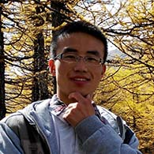
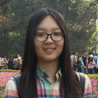

获得者
2014获得者: 刘小东 
"我是来自陕西榆林的阳光男孩刘小东，就读于西安交通大学生命学院。现任医电23班班长 ，学生会部长，众思杂志社编辑，仲英书院学业辅导中心志愿者，仲英书院综合事务委员会委 员等职务，获得了“国家励志奖学金”，西安交通大学“优秀学生”，“志愿辅导先进个人”等。目前 正在研究基于视频的无创连续血压的测量及脉搏波与血压关系的模拟，并担任项目组组长。无 论在学习，生活还是科研中，都不乏我努力奔跑的身影。充满活力和正能量的我也热衷于交流 ，在交流中能感受思想的碰撞，思维的升华，不断挑战自我，超越自我。不断交流和实践让我 明白，不仅要学好理论知识，还要学会把理论与实践相结合，用所学知识解决实际问题，敢于 尝试，勇于创新。所以，我一定会继续奋斗，全面发展，认真对待每一件值得做的事，并全力 把它做好，让优秀成为一种习惯，力争为社会、为国家贡献一份自己的力量！"
2014鼓励奖: 马雅蕾 
"我叫马雅蕾，来自河南郑州。我是一个阳光乐观有爱心有责任心的女孩！在爱心志愿活动 方面，去年八月，我到灞源县初级中学支教，和孩子们培养了深厚感情；樱花节在学校担任志 愿者。在学习方面，大一综合排名专业第二。科研方面，2013年3月加入我校“BEBC”实验室 ；担任组长的本科生创新实验正在初期准备阶段。在学生组织中，从大一至今，担任团支书， 组织班级主题班会、成立班级学习互助小组等。从大二起开始担任团工委组织部副部长一职， 主要负责组织部日常工作等。在接下来的学习生活中，我会更加严格要求自己，更加努力，积 极参加科研活动，培养自己的科研精神与创新精神，让自己变的更加优秀！"